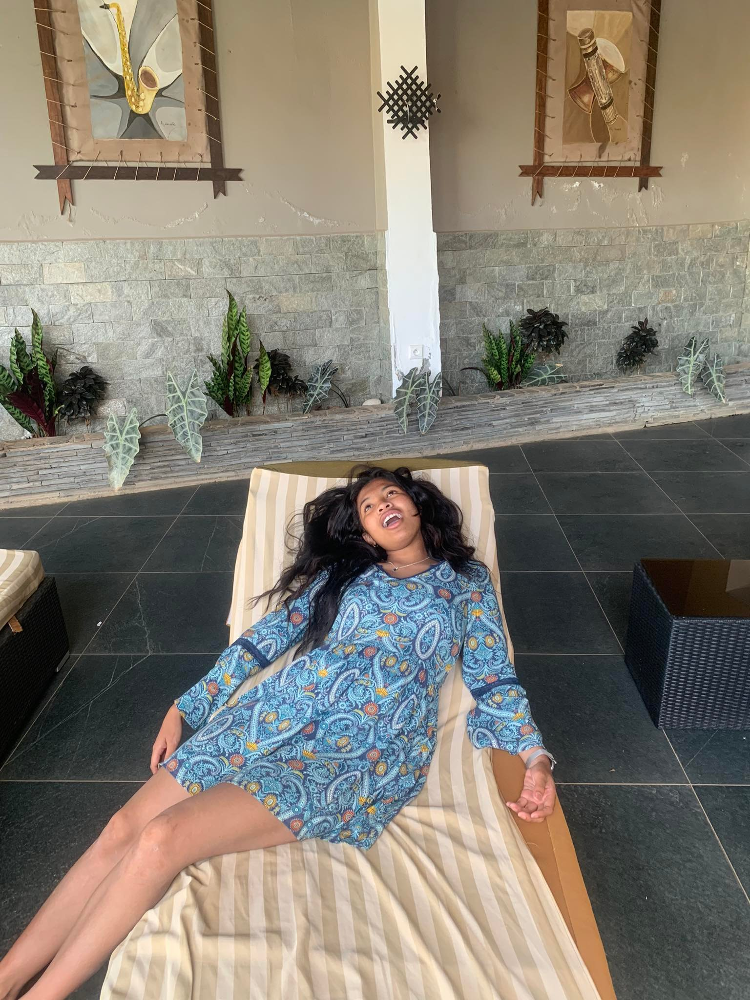
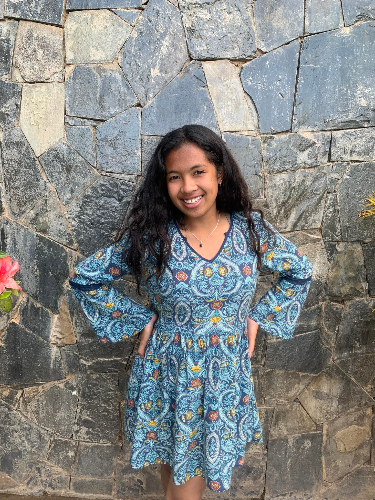
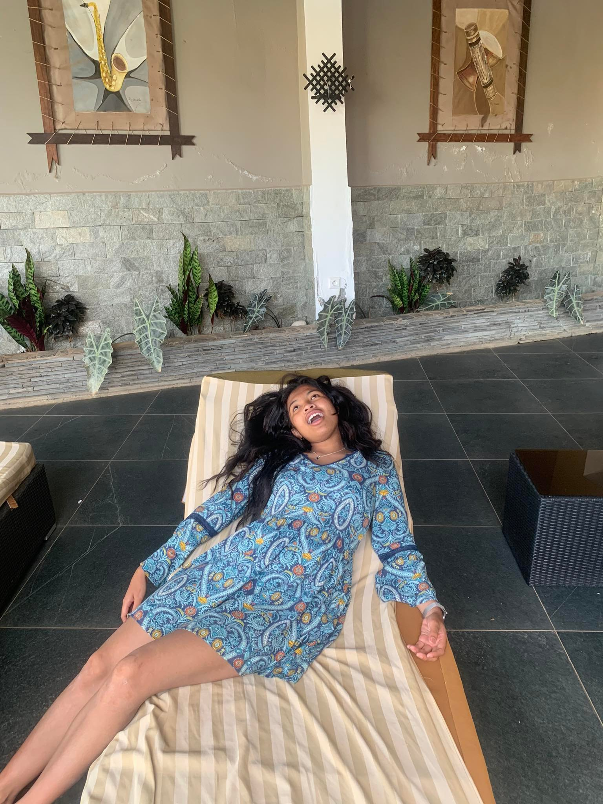
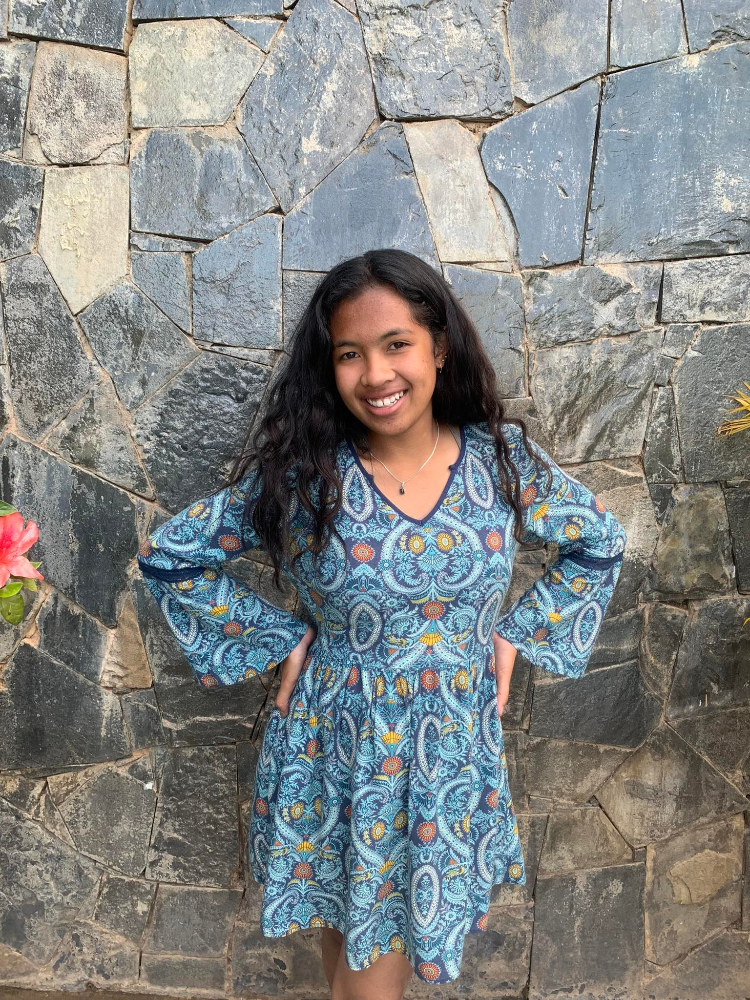

Tongasoa ❤️ Vonona ve?
Andao aryü•∞ ➔
Ho an'ilay fitiavako, fiainako ,malalako tsy foiko ❤️
Iangotiako,
Il y a six ans, nos premiers mots échangés tournaient autour d’un match entre la Juventus et le Barça. Qui aurait cru que cette conversation anodine marquerait le début d’une histoire d’amour aussi profonde et inébranlable ? À l’époque, on ne savait pas encore que nos cœurs allaient battre à l’unisson pendant toutes ces années, que ton sourire allait devenir mon soleil, et que ton amour deviendrait mon refuge.
Tu as été mon cœurdonier, celle qui a su panser mes blessures alors que je traversais des moments incertains. Mais tu étais bien plus qu’une amie, tu étais cette présence rassurante, ce rayon de lumière qui éclairait mes jours. À chaque récréation au lycée Saint Antoine, mon regard te cherchait, et lorsque je ne te trouvais pas, une étrange tristesse m’envahissait. C’était bien plus que de l’amitié… c’était déjà toi, celle que mon cœur avait choisie sans même que je m’en rende compte.
Te souviens-tu de cette photo pendant l’Andron’ny Mahamalagasy ? C’était mon premier cadeau de toi… un souvenir gravé à jamais. À l’époque, nous n’étions pas encore ensemble, et pourtant, je sentais déjà cette jalousie monter en moi quand je te voyais rire avec d’autres garçons. Mon cœur criait en silence ce que mes lèvres n’osaient pas encore prononcer : "Je t’aime."
Puis vint ce fameux 8 mars où je t’ai raccompagnée jusqu’à chez toi. J’ai encore des frissons en y repensant. Ce moment, ces pas partagés sous le ciel ensoleillé, ce silence qui en disait long… tout était parfait. Et que dire du jour où tu as chanté devant tout le monde lors de la fête du collège ? Ce jour-là, j’ai failli pleurer. Ta voix, ta présence, tout en toi me captivait.
Et puis, il y avait ces moments où nous portions nos maillots de la Juve, où l’on riait ensemble des "Dybaldo", où nos cœurs vibraient pour la même équipe… mais surtout l’un pour l’autre. J’étais vraiment amoureux.
Les années ont passé et la distance a voulu nous séparer… mais notre amour a tenu bon. Après mon bac, l’éloignement était difficile. Il y avait des jours où je sombrais dans la tristesse de ne pas pouvoir te voir. Certains murmuraient des doutes, mais notre confiance a été plus forte que les rumeurs.
Nous avons construit quelque chose d’unique… les déjeuners en famille, les concerts de Reko où l’on chantait à tue-tête, chaque restaurant visité, nos disputes passionnées, nos réconciliations pleines d’amour, les sorties de promotion, ce voyage à Ampefy… autant de souvenirs qui font de notre histoire une aventure merveilleuse.
Et puis, ces nuits où nous sortions ensemble... Aujourd’hui, je n’aime plus sortir sans toi. L’ambiance n’est plus la même, la ville me semble vide quand ta main n’est pas dans la mienne.
Ma chérie, je n’ai peut-être pas de cadeau matériel pour toi aujourd’hui, mais ce site et cette lettre sont mon cadeau, mon hommage, mon amour gravé dans chaque mot.
Il n’y avait que Manchester United qui faisait battre mon cœur avec autant de passion… jusqu’à ce que tu entres dans ma vie. Toi seule as réussi l'impossible : prendre la place de mon club de toujours.
Merci d’être celle qui fait battre mon cœur depuis six ans. Merci d’être mon amour, mon amie, mon âme sœur.
Je t’aime. ❤️
Notre Histoire ➔
Notre Belle Histoire
❤️ Tout a commencé un soir de match,...
❤️ Au lycée, ton absence pesait...
❤️ Un 8 mars gravé dans ma mémoire...
❤️ Malgré la distance et les rumeurs...
Nos Souvenirs ➔
 


